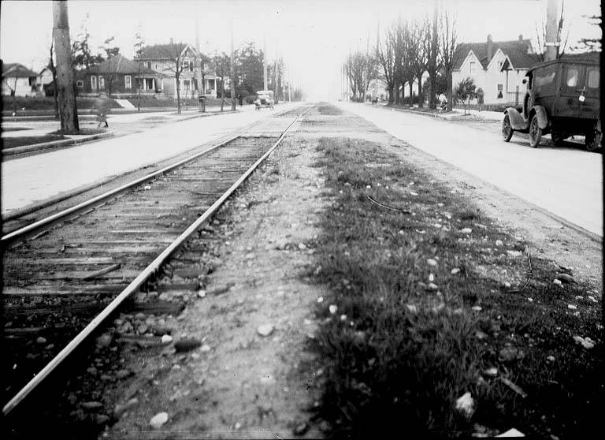

Directions: Study the photograph and the background note, then answer the questions.

Background. The tracks in the photograph belong to a streetcar line, the Number 3 West Seattle line. When the photograph was taken, passenger car registrations in the United States had risen from about 8 million in 1920 toward about 23 million in 1929. Builders were laying out subdivisions beyond the streetcar lines, and federal aid and state gasoline taxes were paying for paved highways.
1. What two transport systems share this street, and what visible detail shows each one? Name one detail for each system.
2. Why was the paved lane beside the tracks a threat to the company that owned the tracks? Answer with what the lane let a family do and what the streetcar then lost.
3. A man who lives in one of these houses in 1925 drives to a job downtown each morning and back each evening. Give the term for a person who travels this way, and name one public cost that makes his trip possible.
4. On a Saturday this family drives sixty miles to a lake, eats at a roadside diner, and sleeps in a tourist cabin. Which parts of this ordinary day would have been impossible or unusual in 1910, and which new businesses does the day support?
1. What two transport systems share this street, and what visible detail shows each one? The streetcar system, shown by the rails laid down the center of the street, and the private automobile system, shown by the paved lanes on each side of the tracks and the automobiles parked and driving on them. The houses on both sides belong to either answer only when a student ties them to the residents both systems served. (Blueprint 4)
2. Why was the paved lane beside the tracks a threat to the company that owned the tracks? The paved lane let a family travel on its own schedule, from its own door, without buying a fare or walking to a stop. Every trip a family made in its own car was a fare the streetcar company did not collect, while the company still had to maintain its tracks and cars and charge the fixed fare its franchise allowed. Streetcar companies across the country lost riders to private cars in exactly this way and cut service or failed. (Blueprint 4)
3. Give the term for this traveler, and name one public cost that makes his trip possible. The term is commuter. The public cost is the paved street and highway system his trip runs on, paid for with federal aid under the Federal Aid Road Act of 1916 and the Federal Highway Act of 1921 and with state gasoline taxes, levied by every state by 1929. Accept either funding source when it is named as public money. (Blueprint 4)
4. Which parts of the day would have been impossible or unusual in 1910, and which new businesses does it support? A sixty mile pleasure drive on paved roads, made on the family's own plan, would have been unusual in 1910, when only about 458,000 cars were registered in the country and most rural roads were dirt. Sleeping in a tourist cabin would have been impossible: that lodging grew out of the municipal tourist camps of the early 1920s, and the motel followed in 1925. The day supports the filling station, the roadside diner, and the tourist cabin or motel, the roadside economy that existed only because drivers bought along roads. (Blueprint 4)
Teacher note. This check is formative. Question 1 is the observation diagnostic. Students who see only a street have not yet read the photograph as two systems in competition. Question 2 predicts success on the writing task, because it asks for the same gain and loss pairing the essay requires.